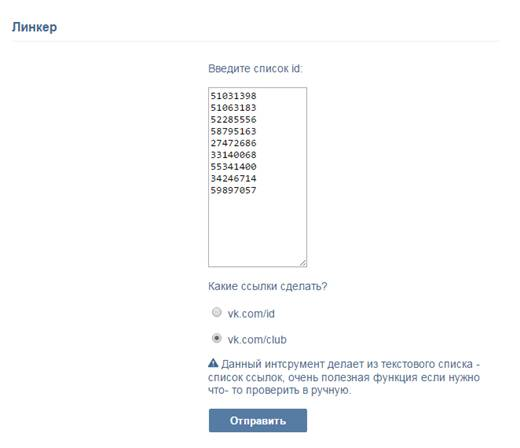
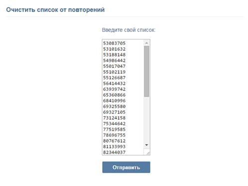
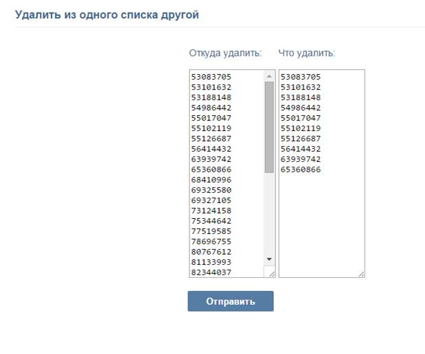

Линкер

Скрипт доступен без авторизации, с помощью него можно преобразовать список id в список ссылок, по которым удобно ходить. Очень полезная функция для ручной проверки чего либо, или если не хотите авторизовываться. К примеру, вы собрали базу id, и хотите вручную её проспамить: поставить лайки, добавить в друзья и прочее. Для этого нужно загнать свой список в данный скрипт, преобразовать его в ссылки, а затем перейти на каждую страницу или сообщество в ручную. Браузер запоминает посещённые ссылки, что очень помогает.
Очистить список от повторений

Когда собираете базу id из разных источников, повторения практически всегда неизбежны. Почистить список от повторений можно с помощью данного скрипта.
Удалить из списка список

Данный скрипт удаляет из одного списка другой. Допустим вы собрали новую базу id, и хотите из этой новой базы удалить старую, данный скрипт вам поможет.